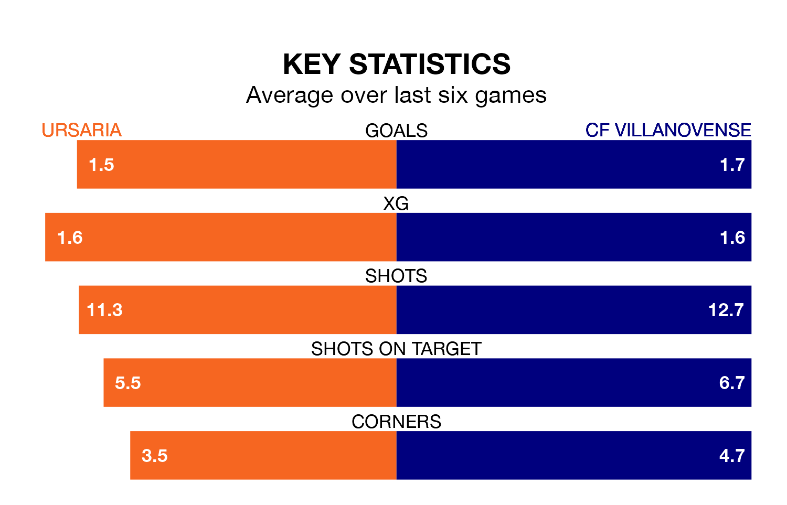

Ursaria host CF Villanovense on Sunday at the Estadio Polideportivo La Juventud in the Segunda División RFEF Group 5.
In their last league match, on April 28, Ursaria lost to CDA Navalcarnero 2-1 away.
Villanovense drew, 3-3 at home against UD San Fernando, with Jesús Sillero Martín (two) and Mario González Casado on the scoresheet.
With 33 goals in 33 games so far this season, Ursaria are scoring at below the league average rate with 1.0 goals per game. And they are conceding more than average, letting in 39 goals at a rate of 1.2 per game.
Villanovense, meanwhile, are average scorers, with 1.1 goals per game. They have conceded 1.0 goal per game.
The hosts are 14th in the table after 33 games, of which they have won 11 and drawn eight, earning 41 points.
The away side are four places ahead of Ursaria in 10th, with 12 wins and eight draws putting them on 44 points.
Ursaria are in mixed form in the Segunda División RFEF Group 5, with three wins and three losses from their last six games.
With two wins and two draws over that period, Villanovense's form is slightly worse – they have taken eight points from 18, compared to the home team's nine.
Updated: 10:44 (UTC), 30/04/24